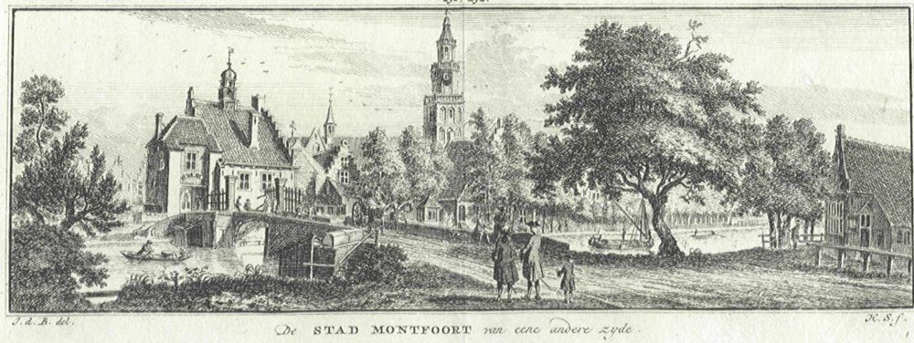

Waar de familie woonde, werkte, trouwde en begraven werd. Bijna vijfhonderd jaar lang in een klein
gebied langs de Lek. Alle plaatsen staan ook op de kaart.
Jaarsveld en het goed Oversloot
ca. 1515 – 1830 · de Smetsers en de eerste Van Oostrums
Jaarsveld aan de Lek, ets van Jan van Almeloveen (eind 17e eeuw).
Statens Museum for Kunst, publiek domein.
Jaarsveld is een dijkdorp aan de voet van de Lekdijk, het oudste dorp van de gemeente Lopik. De naam betekent
"het veld van Jarig". Eeuwenlang was er ruzie over de vraag of het dorp bij het Sticht Utrecht of bij Holland
hoorde; rond 1640 werd het Hollands.
Hier woonden de Smetsers, de voorouders van de Oosteroms, al in de 16e eeuw als schipper en boer. Rond 1580
huurde Cornelis Ariensz Smetser het goed Oversloot in het gerecht Jaarsveld, van jonkheer Carel Steur. Oversloot
lag aan de Lek en wordt al in 1392 genoemd.
In het rampjaar 1672–1673 trokken Franse troepen door het gebied. In 1673 verwoestten ze het kasteel
Huis te Jaarsveld. Jan Ariensz van Oostrum was toen een jongen van een jaar of tien.
Teunis van Oostrum (1762–1830) en zijn zoon Arie (1801) waren nog schipper in Jaarsveld. Teunis en zijn vrouw
Geertje Dekker stierven er in augustus 1830, drie dagen na elkaar.
Bronnen: famkroon.nl; Monumenten in Nederland (DBNL); geschiedenis van Jaarsveld (huistejaarsveld.nl).
De kerk van Lopikerkapel
1622 – 1808 · dopen, trouwen en begraven
Lopikerkapel met het kerkje. Foto: Jan Dijkstra,
Wikimedia Commons, CC BY-SA 4.0.
Lopikerkapel heette vroeger Zevenhoven. Er stond al in 1327 een kapel, een bijkerk van Lopik. Rond 1450 werd de
kerk opnieuw gebouwd: het koor in gotische stijl, het schip met romaanse trekjes. Vanaf 1605 was het een
protestantse kerk, en in 1620 werd het een zelfstandige gemeente. De preekstoel is uit 1646.
Bijna twee eeuwen lang werden de Van Oostrums uit de buurtschap Jaarsvelderkapel hier gedoopt, getrouwd en
begraven. Jan Ariensz van Oostrum werd in 1753 in de kerk begraven, zijn zoon Huijbert in 1792 in een gehuurd graf.
Voor Huijbert luidde de klok twee uur. Dat was de klok die Gerhart Schimmel in 1682 goot, en die er nog steeds hangt.
Tussen 1828 en 1832 werd de kerk gerestaureerd door aannemer Roeloff Benschop. Dat was waarschijnlijk
Roelof Benschop (1794–1858) uit Lopik, een kleinzoon van Huijbert van Oostrum: zijn moeder was Huijberts dochter
Dirkje.
Bronnen: Wikipedia, Hervormde kerk (Lopikerkapel); RHC Rijnstreek en Lopikerwaard; doop-, trouw- en
begraafboeken Lopikerkapel (Het Utrechts Archief).
De Lek
ca. 1540 – 1830 · bijna driehonderd jaar schippers
De Lek rond 1745, met in de verte Lopik en Jaarsveld.
Rijksmuseum, CC0.
De rivier was de snelweg van toen. Van Aryen Smetser (ca. 1540) tot Arie Oosterom (1801) waren de mannen van de
familie schipper. Jan Ariensz heette zelfs "Jan Ariens Schipper". Huijbert was "leenman en schipper van
Jaarsvelderkapel", zijn zoon Willem (1754–1818) "marktkoopman en schipper". Jans zoon Jan (1699) was ook schipper en
trouwde in 1746 in Vreeswijk, de schippersplaats waar de Vaartse Rijn op de Lek uitkomt. Pas Arie (1801) ging na
zijn huwelijk aan land en werd boer.
Montfoort
1649 · een burgemeester in de familie

Montfoort, ets van Hendrik Spilman naar Jan de Beijer (18e eeuw).
Wikimedia Commons, publiek domein.
Annetje van Oostrum Smetser, gedoopt in 1622, was een dochter van Adriaan, de eerste die de naam Van Oostrum
gebruikte. In 1649 trouwde ze in het stadje Montfoort aan de Hollandse IJssel met Hendrick Jacobs Speyert,
burgemeester en schepen van Montfoort.
Bron: famkroon.nl.
Willige Langerak
1830 · de bruiloft van de laatste schipper
De kerk van Willige Langerak in 1840. Foto: Gerard Dukker,
RCE / Wikimedia Commons, CC BY-SA 4.0.
Hier trouwde schipper Arie Oosterom in juni 1830 met Elisabeth Kooiman, dochter van een boer. Daarna werd hij
zelf boer. Ook Willem van Oosterom (1754) trouwde hier, in 1777.
Zuid-Polsbroek en Polsbroek
1835 – 1908 · drie generaties boeren
Polsbroek in de 18e eeuw (atlas Schoemaker).
Wikimedia Commons, publiek domein.
Zuid-Polsbroek was tot 1857 een eigen gemeente, en eeuwenlang een heerlijkheid van de Amsterdamse regentenfamilie
De Graeff. In 1835 is Arie Oosterom hier bouwman. Hij overleed in 1881 in huis nummer 57 in Polsbroek. Zijn zoon
Teunis was landbouwer in huis nummer 33 en kreeg er met Adriana Cornelia Lekkerkerker negentien kinderen.
Bergambacht
1909 – 1959
De kerk van Bergambacht. Foto: Sailko,
Wikimedia Commons, CC BY 3.0.
Pieter Oosterom en Willempje Lekkerkerker verhuisden kort na 1908 over de Lek naar Bergambacht, in de
Krimpenerwaard. Pieter was hier boer tot zijn dood in 1959.
Arie van Oostrum (1756–1841), een broer van onze Teunis, trouwde in 1787 in Kockengen met Engeltje Kool. Hij
trok naar Portengen en Ter Aa, ten noorden van Utrecht, en overleed in Ruwiel. Van hem stammen de Van Oosteroms uit
die streek en later uit Culemborg af.